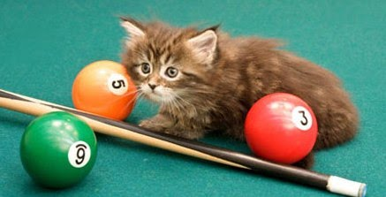

|  |
Give us two numbers, let's say 34 and 72. How do we add them? We align the numbers by column and then add the corresponding digits. Let's start with the ones place: 4 + 2 equals 6.... Wait a minute, are we in school or at a supermarket? In school, we would add 4 and 2 first, but at a supermarket, we would add 30 and 70 first. So, if we're adding $34 and $72, we know the total will be over $100. Why do we approach it differently?
Give us two numbers, let's say 34 and 9. How do we multiply them? First, we put these two numbers together. Then we multiply 4 and 9, which gives us 36,... Wait a minute, are we at school or a supermarket? When we are at a supermarket, we first calculate 30 multiplied by 9, which equals 270. So, if there are 9 items priced at $34 each, we know it is over $270. And because of the extra $4, we know it is probably around $300. Why do we do it differently?
When we were taught addition or multiplication in school, we were always instructed to start adding or multiplying from the last digit. However, in real life situations, we tend to start from the first digit. For instance, when we write a number like 356, we write the digit 3 first. When we say the number aloud, we say "three hundred and fifty-six," starting from the first digit 3. So, why do we begin adding or multiplying from the last digit first?
For thousands of years, people have been performing these operations, but what if they have been doing it the wrong, difficult, and unnatural way all along?
Shi Fengshou Rapid Calculation Algorithm is an algorithm combines mental, oral, and manual calculations, beginning with high digits. It was developed by Professor Shi Fengshou when he was 11 years old in 1967. After ten years of diligent study, extensive calculations, and repeated validations, he perfected this method.
In 1978, the algorithm was certified by the Chinese Academy of Sciences, the Institute of Computing, the Institute of Mathematics, and the Office of Applied Mathematics Promotion.
In 1987, Shi Fengshou was invited by UNESCO to demonstrate his algorithm at the 24th conference in Paris.
The demonstration received high praise from attending scientists representing 158 countries and regions.
In 1988, he performed his algorithm at the 9th UNESCO Asia-Pacific Regional Conference, impressing representatives from over 40 countries and regions.
The main characteristics of the Shi Fengshou Rapid Calculation Algorithm include finger calculations with the left hand, without relying on tools or calculation procedures. It enables individuals to directly state the correct answer upon seeing the equation. Furthermore, this algorithm can be applied to various mathematical operations, such as multi-digit addition, subtraction, multiplication, division, exponentiation, square root, trigonometric functions, logarithms, and more.
Initially, I wanted to introduce the Shi Fengshou Rapid Calculation Algorithm on this website. However, due to the rapid growth of the internet, it seems unnecessary now. Anyone interested in this method should be able to learn it from various sources. Although I wonder, does anyone even want to learn it? Everyone uses a calculator!
Therefore, I will not provide any further details. The rest of the website features a simple mathematical game that allows you to practice the four basic mathematical operations: addition, subtraction, multiplication, and division.
Mathematics is simple and beautiful! Enjoy!